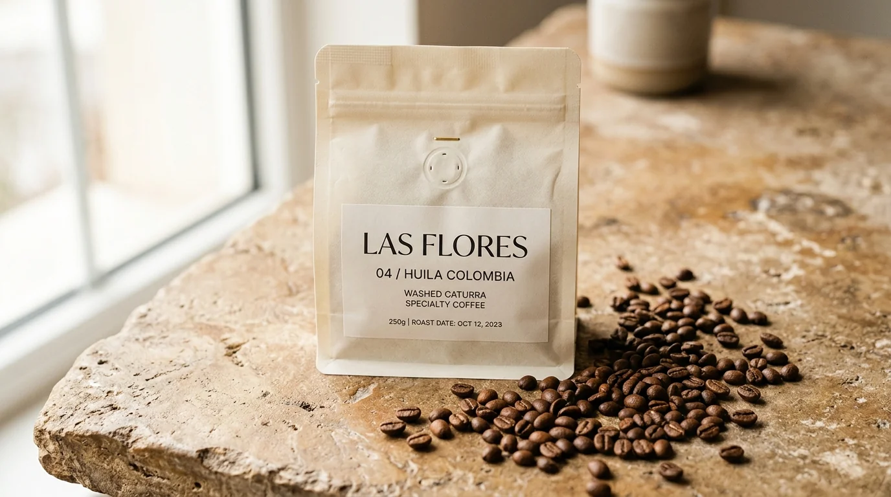

Coffee with a known origin.
Every roast begins with exact geographic and agricultural provenance. We document the elevation, botanical variety, processing method, and producer for every offering we release.

| ORIGIN | Huila, Colombia |
| PRODUCER | Las Flores |
| PROCESS | Washed |
| VARIETY | Caturra |
| ALTITUDE | 1,850 MASL |
| ROAST PROFILE | Light |
Huila High-Altitude Micro-Climate
Grown at 1,850 meters above sea level by the Las Flores estate in Huila, Colombia. High diurnal temperature swings decelerate coffee cherry maturation, condensing natural sugars and yielding clean red apple acidity and caramel sweetness.
Our roasting philosophy is strictly light and development-focused. We calibrate time and airflow to preserve the native organic acids, floral aromatics, and terroir clarity cultivated at origin. By refusing to mask defects with dark roast development, every bag remains an authentic reflection of its harvest lot.
LAS FLORES / 04
- ORIGIN Huila, Colombia
- PRODUCER Las Flores
- PROCESS Washed
- VARIETY Caturra
- ALTITUDE 1,850 MASL
- ROAST Light
[COFFEE OFFERING 02]
- ORIGIN [SPECIFICATION PENDING]
- PRODUCER [SPECIFICATION PENDING]
- PROCESS [SPECIFICATION PENDING]
- VARIETY [SPECIFICATION PENDING]
- ALTITUDE [SPECIFICATION PENDING]
- ROAST Light
[COFFEE OFFERING 03]
- ORIGIN [SPECIFICATION PENDING]
- PRODUCER [SPECIFICATION PENDING]
- PROCESS [SPECIFICATION PENDING]
- VARIETY [SPECIFICATION PENDING]
- ALTITUDE [SPECIFICATION PENDING]
- ROAST Light
Experience Coffee with True Provenance.
Order freshly roasted whole bean packages of LAS FLORES / 04, roasted to order with complete harvest documentation on every bag.